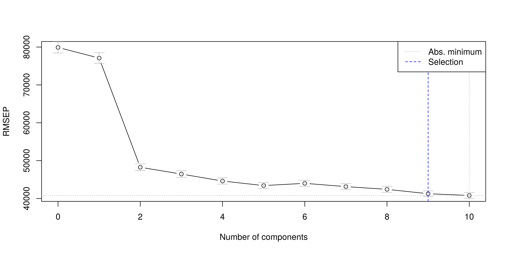
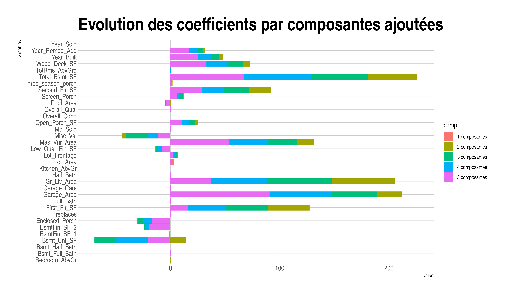
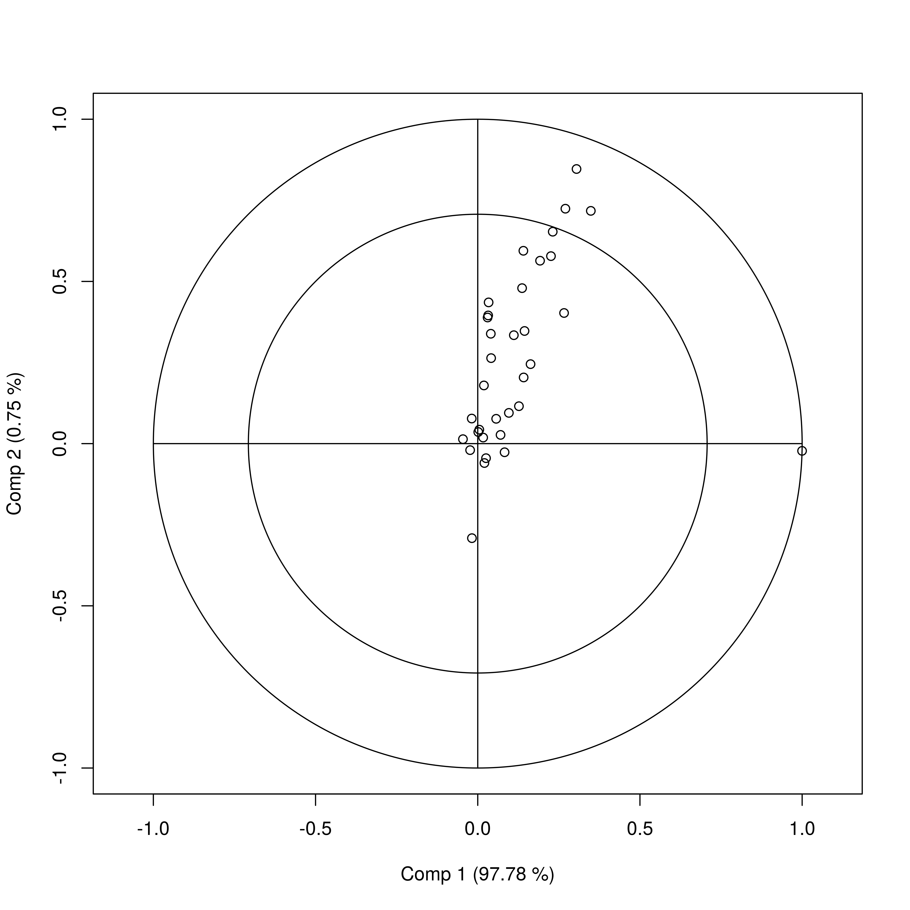

5 Régéressions sur les moindres carrés partiels
Comme pour la régression PCR, calcul de T dont les éléments sont les « scores » et les colonnes les « composantes » : \(T = X.W\) avec \(W\) matrice des poids (ou loadings) et \(X\) matrice des variables explicatives centrées (n,m).
Mais, contrairement à la PCR, le calcul de \(T\) se fait en tenant compte de la variable à prédire \(y\). Double modélisation :
\(X = TP + R\) (1)
\(Y = TQ + F\) (2)
Avec : R matrice des résidus associées à la prédiction de \(X\) ; \(F\) vecteur des résidus associé à la prédiction de \(y\).
Première étape : calculer t1 la première composante principale, puis estimer (1) et (2) à une seule composante :
\(X = t_1 . p_1 + R1\) et \(Y = t_1 . q_1 + F_1\)
Avec \(t_1\) de dimension (n,1) \(p_1\) de dim (1,m) loadings \(q_1\) de dim (1,1) loadings
On introduit une deuxième composante \(t_2\). Ainsi, une ligne \(x_i\) de \(X\) est égale à : \(x_i = t_1i p_1 + t_2i p2\)
L’introduction de nouvelles composantes se fait selon la même procédure : partant d’un modèle à k composantes, on créé un nouveau modèle à k+1 composantes en calculant une nouvelle composante tk, puis les paramètres des deux modèles couplés :
$ X = t_1p_1+t_2 p_2 +…+t_k p_k + t_k_+1 p_k+1 + R_k+1 $
\(Y = t_1q_1+t_2 q_2 +…+t_k q_k + t_k+1 q_k+1 + F_k+1\)
5.1 Les loadings et les weights
5.2 Modèle PLSR avec validation croisée
La validation croisée nous permet de sélectionner le nombre de composantes à retenir dans le modèle.
## Data: X dimension: 2930 34
## Y dimension: 2930 1
## Fit method: kernelpls
## Number of components considered: 10
##
## VALIDATION: RMSEP
## Cross-validated using 2930 leave-one-out segments.
## (Intercept) 1 comps 2 comps 3 comps 4 comps 5 comps 6 comps
## CV 79900 77084 48250 46459 44618 43416 44012
## adjCV 79900 77084 48250 46459 44618 43416 44005
## 7 comps 8 comps 9 comps 10 comps
## CV 43140 42424 41269 40807
## adjCV 43140 42424 41268 40805
##
## TRAINING: % variance explained
## 1 comps 2 comps 3 comps 4 comps 5 comps 6 comps 7 comps
## X 97.780 98.53 98.84 99.22 99.34 99.45 99.85
## Sale_Price 8.027 64.11 68.84 70.33 72.22 72.86 73.08
## 8 comps 9 comps 10 comps
## X 99.89 99.90 99.91
## Sale_Price 74.37 75.76 77.465.3 Le nombre de composantes
A mesure que nous ajoutons des composantes les erreurs de prédictions baissent. Toutefois nous ne voulons pas avoir beaucoup trop de composantes pour expliquer notre variable dépendante.

## , , 10 comps
##
## Sale_Price
## Lot_Frontage 79.31193427
## Lot_Area 0.36831117
## Year_Built 518.88299718
## Year_Remod_Add 447.68830427
## Mas_Vnr_Area 61.78841090
## BsmtFin_SF_1 -2.02267103
## BsmtFin_SF_2 -20.23508441
## Bsmt_Unf_SF -18.82959785
## Total_Bsmt_SF 45.07635111
## First_Flr_SF 33.42330452
## Second_Flr_SF 31.11598592
## Low_Qual_Fin_SF -33.10973603
## Gr_Liv_Area 31.42955442
## Bsmt_Full_Bath 2.50625853
## Bsmt_Half_Bath -0.87468571
## Full_Bath 3.57979273
## Half_Bath 1.86239802
## Bedroom_AbvGr -11.05782822
## Kitchen_AbvGr -3.50590804
## TotRms_AbvGrd -3.98120283
## Fireplaces 6.16607951
## Garage_Cars 4.60657406
## Garage_Area 38.97209215
## Wood_Deck_SF 31.53136203
## Open_Porch_SF 18.00519183
## Enclosed_Porch 40.88928470
## Three_season_porch 21.84401255
## Screen_Porch 96.59518558
## Pool_Area -87.63481230
## Misc_Val -10.91991992
## Mo_Sold 0.74461463
## Year_Sold -2.74854560
## Overall_Qual 5.88611302
## Overall_Cond -7.55337559
## Comp 1 Comp 2 Comp 3 Comp 4 Comp 5
## 97.7795258945 0.7516886473 0.3130167329 0.3786266466 0.1185967353
## Comp 6 Comp 7 Comp 8 Comp 9 Comp 10
## 0.1122299071 0.4011698316 0.0328497876 0.0156070413 0.0082290949
##
## Loadings:
## Comp 1 Comp 2 Comp 3 Comp 4 Comp 5 Comp 6 Comp 7 Comp 8
## Lot_Frontage
## Lot_Area 0.966 -0.258
## Year_Built 0.142 0.158 0.512 0.213 0.284
## Year_Remod_Add 0.119 0.420 0.173 0.243
## Mas_Vnr_Area 0.162 0.220 0.236 0.152 -0.146
## BsmtFin_SF_1
## BsmtFin_SF_2 -0.160 -0.245 0.192 0.306
## Bsmt_Unf_SF 0.150 -0.790 0.507 0.178 -0.169
## Total_Bsmt_SF 0.128 0.480 0.257 -0.404 0.569 0.297
## First_Flr_SF 0.112 0.401 -0.106 -0.399 0.326 0.122 -0.425
## Second_Flr_SF 0.216 -0.156 0.323 -0.446 0.524
## Low_Qual_Fin_SF -0.110
## Gr_Liv_Area 0.164 0.614 -0.311 -0.123 0.130 -0.361
## Bsmt_Full_Bath
## Bsmt_Half_Bath
## Full_Bath
## Half_Bath
## Bedroom_AbvGr
## Kitchen_AbvGr
## TotRms_AbvGrd
## Fireplaces
## Garage_Cars
## Garage_Area 0.243 0.364 0.416 0.314 -0.175 -0.163 -0.292
## Wood_Deck_SF 0.145 0.159 0.123 0.275 -0.150
## Open_Porch_SF 0.180
## Enclosed_Porch -0.248
## Three_season_porch
## Screen_Porch 0.166
## Pool_Area
## Misc_Val -0.373 0.688 -0.449 -0.372 0.208
## Mo_Sold
## Year_Sold
## Overall_Qual
## Overall_Cond
## Comp 9 Comp 10
## Lot_Frontage
## Lot_Area
## Year_Built 0.262 0.169
## Year_Remod_Add 0.249 0.230
## Mas_Vnr_Area 0.131
## BsmtFin_SF_1
## BsmtFin_SF_2
## Bsmt_Unf_SF
## Total_Bsmt_SF -0.159
## First_Flr_SF
## Second_Flr_SF
## Low_Qual_Fin_SF 0.210
## Gr_Liv_Area
## Bsmt_Full_Bath
## Bsmt_Half_Bath
## Full_Bath
## Half_Bath
## Bedroom_AbvGr
## Kitchen_AbvGr
## TotRms_AbvGrd
## Fireplaces
## Garage_Cars
## Garage_Area 0.287 -0.138
## Wood_Deck_SF -0.780 0.416
## Open_Porch_SF -0.106 -0.453
## Enclosed_Porch 0.313 0.632
## Three_season_porch
## Screen_Porch -0.198
## Pool_Area
## Misc_Val
## Mo_Sold
## Year_Sold
## Overall_Qual
## Overall_Cond
##
## Comp 1 Comp 2 Comp 3 Comp 4 Comp 5 Comp 6 Comp 7 Comp 8 Comp 9
## SS loadings 1.000 1.000 1.000 1.000 1.000 1.000 1.000 1.000 1.000
## Proportion Var 0.029 0.029 0.029 0.029 0.029 0.029 0.029 0.029 0.029
## Cumulative Var 0.029 0.059 0.088 0.118 0.147 0.176 0.206 0.235 0.265
## Comp 10
## SS loadings 1.000
## Proportion Var 0.029
## Cumulative Var 0.294##
## Loadings:
## Comp 1 Comp 2 Comp 3 Comp 4 Comp 5 Comp 6 Comp 7 Comp 8
## Sale_Price 2.950 87.750 44.614 25.186 41.210 57.841 8.954 77.426
## Comp 9 Comp 10
## Sale_Price 115.890 199.577
##
## Comp 1 Comp 2 Comp 3 Comp 4 Comp 5 Comp 6 Comp 7
## SS loadings 8.7 7700.075 1990.377 634.354 1698.287 3345.604 80.172
## Proportion Var 8.7 7700.075 1990.377 634.354 1698.287 3345.604 80.172
## Cumulative Var 8.7 7708.775 9699.152 10333.506 12031.793 15377.398 15457.569
## Comp 8 Comp 9 Comp 10
## SS loadings 5994.735 13430.417 39830.805
## Proportion Var 5994.735 13430.417 39830.805
## Cumulative Var 21452.304 34882.721 74713.526## [1] "coefplot" "compnames" "corrplot"
## [4] "cppls" "crossval" "cvsegments"
## [7] "explvar" "gasoline" "jack.test"
## [10] "kernelpls.fit" "loading.weights" "loadingplot"
## [13] "loadings" "mayonnaise" "msc"
## [16] "MSEP" "mvr" "mvrValstats"
## [19] "oliveoil" "oscorespls.fit" "pcr"
## [22] "pls.options" "plsr" "prednames"
## [25] "predplot" "R2" "respnames"
## [28] "RMSEP" "scoreplot" "scores"
## [31] "selectNcomp" "simpls.fit" "stdize"
## [34] "svdpc.fit" "validationplot" "var.jack"
## [37] "widekernelpls.fit" "yarn" "Yloadings"
## [40] "Yscores"